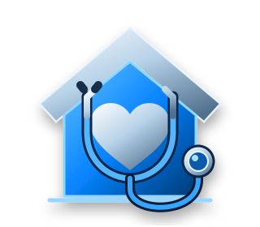

SHOW THE CARE YOU PROVIDE
Make your services, service areas, accepted coverage, and next steps clear. Give patients, family members, and referral partners an easy way to reach the right person at your agency.

WEBSITE DESIGN, SEO + AEO MANAGEMENT
Get more patients for your home health agency, including Medicaid patients when your agency accepts their coverage.
LET’S GROW YOUR AGENCYFamilies need to know who can help, what care is available, and how to get started. StartWeb7 builds websites and provides ongoing SEO + AEO for home health agencies, helping more people find your services and contact your team about care.
Make your services, service areas, accepted coverage, and next steps clear. Give patients, family members, and referral partners an easy way to reach the right person at your agency.
SEO helps more people discover your agency on search engines such as Google, creating more opportunities to reach patients who need the care you provide.
AEO stands for Answer Engine Optimization. It helps AI tools understand your agency so it can appear in relevant AI answers, giving families another way to discover your care services and contact your team.
Clear phone links and contact options help families move from reading about your agency to asking about care. Your team handles the patient intake and coverage conversation.
FOR AGENCIES THAT ACCEPT MEDICAID
If your agency accepts Medicaid, that should be easy to see. We make your accepted programs or plans, available services, and service areas clear so people looking for care can understand whether your agency may be a fit.
We connect that information to a clear next step, contacting your team to discuss care and confirm coverage.
TALK ABOUT YOUR AGENCYNeed a new website? We can build it. Already have one? Let’s discuss ongoing SEO + AEO to help your agency reach more patients over time.
Yes. We can build your website and SEO + AEO around reaching people looking for home health agencies that accept Medicaid. Your pages will reflect the Medicaid programs or plans your agency actually accepts, the care you provide, and the areas you serve. Your agency confirms coverage and whether it can accept each patient.
We help more people find your agency, understand your services, and contact your team about starting care. Website design makes your services clear, while ongoing SEO + AEO supports your visibility as families look for help online.
Yes. We build the content around the services your agency actually provides, such as skilled nursing, therapy, or personal care. We keep medical home health services and help with daily activities clearly distinguished.
Yes. We focus the website on your actual service area so families can see whether your agency serves their address. We also make accepted coverage and the next step easy to find.
We offer both website design and ongoing SEO + AEO management. We can discuss a new website or ongoing improvements to your current website based on what your agency needs.